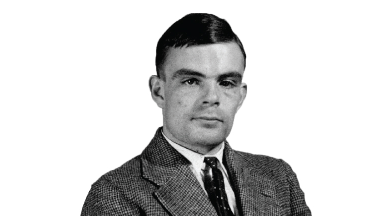

1912 - 1954
“Sometimes it is the people no one can imagine anything of who do the things no one can imagine.”
Alan Turing (23 June 1912 - 7 June 1945) was a pioneering mathematician and computer scientist, widely regarded as the father of artificial intelligence and theoretical computer science. His groundbreaking work during World War II at Bletchley Park involved cracking the Enigma code, significantly contributing to the Allied victory. Turing's creation of the Turing Machine laid the foundation for modern computing, introducing concepts that underpin the logic of contemporary computers. Despite his monumental achievements, Turing faced persecution for his homosexuality, leading to his tragic death in 1954. Today, he is celebrated for his profound impact on technology and is remembered as one of history's greatest minds.
In addition to his wartime contributions, Turing made significant advances in the field of biology, developing theories about morphogenesis, the process that gives rise to patterns and shapes in living organisms. His work was ahead of its time and continues to influence research in various scientific fields today. Turing's legacy lives on, and he is honored worldwide as a symbol of innovation, courage, and resilience.